hist(rnorm(1000, mean =3))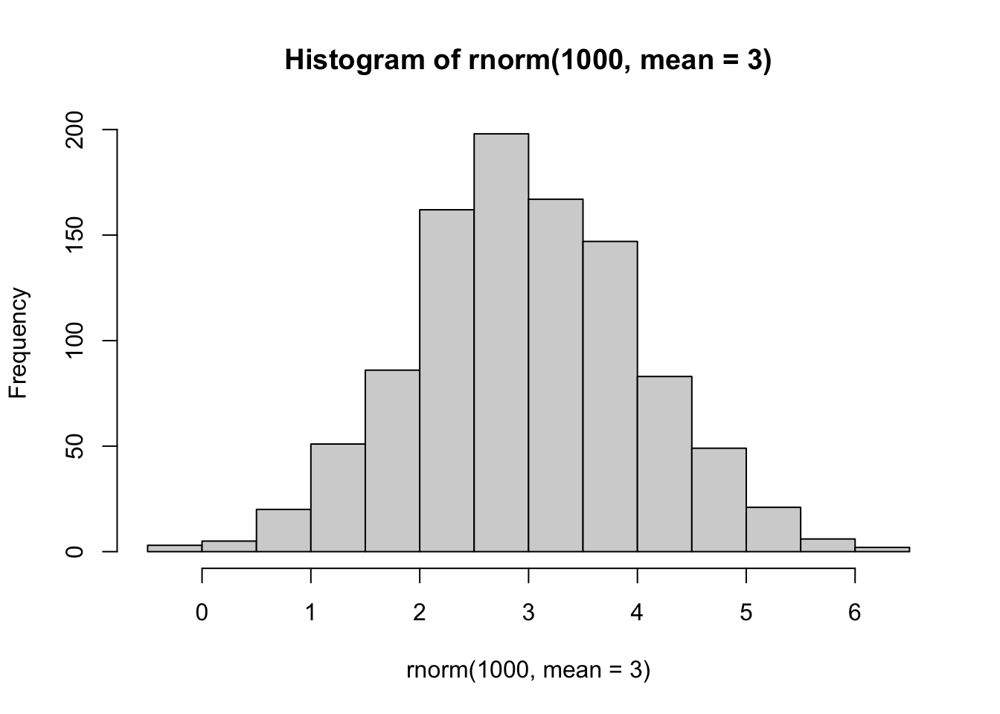
Today we will explore some core machine learning methods that are very popular in bioinformatics. These include clustering and dimensionallity reduction.
The main function in “base” R for K- mmeans clustering is called kmeans()
Before we go too deep let’s make up some “simple” data that we can cluster and know if we are getting a good answer or not. To do this we can use the rnorm() function:
hist(rnorm(1000, mean =3))
x <- c( rnorm(30, -3), rnorm(30, +3) )
x [1] -1.4991600 -2.3043480 -2.2978915 -2.5225288 -3.2399369 -3.1387332
[7] -3.2310151 -2.5230562 -3.6052259 -1.8160236 -1.8801444 -3.6474429
[13] -3.3564789 -0.9366698 -2.9350108 -1.3717367 -2.4981831 -5.5670201
[19] -3.1147913 -3.4274104 -0.5353863 -4.4148366 -3.3507334 -2.8609633
[25] -2.9911449 -2.5854430 -2.4216332 -2.9827009 -3.3148836 -2.9606401
[31] 2.6166593 3.5951129 0.7635575 3.9503623 1.7853959 3.0447957
[37] 4.8768427 3.1308315 2.5366418 3.0528812 3.8128798 3.5702801
[43] 2.2798058 1.4892641 2.6391785 3.9297245 3.3718777 1.1706879
[49] 4.0134044 4.2253391 4.1432205 3.2769467 3.2014603 2.4406449
[55] 3.0799666 3.8518237 2.0908822 1.6765673 3.7534352 1.2798712z <- cbind( x, y= rev(x))
z x y
[1,] -1.4991600 1.2798712
[2,] -2.3043480 3.7534352
[3,] -2.2978915 1.6765673
[4,] -2.5225288 2.0908822
[5,] -3.2399369 3.8518237
[6,] -3.1387332 3.0799666
[7,] -3.2310151 2.4406449
[8,] -2.5230562 3.2014603
[9,] -3.6052259 3.2769467
[10,] -1.8160236 4.1432205
[11,] -1.8801444 4.2253391
[12,] -3.6474429 4.0134044
[13,] -3.3564789 1.1706879
[14,] -0.9366698 3.3718777
[15,] -2.9350108 3.9297245
[16,] -1.3717367 2.6391785
[17,] -2.4981831 1.4892641
[18,] -5.5670201 2.2798058
[19,] -3.1147913 3.5702801
[20,] -3.4274104 3.8128798
[21,] -0.5353863 3.0528812
[22,] -4.4148366 2.5366418
[23,] -3.3507334 3.1308315
[24,] -2.8609633 4.8768427
[25,] -2.9911449 3.0447957
[26,] -2.5854430 1.7853959
[27,] -2.4216332 3.9503623
[28,] -2.9827009 0.7635575
[29,] -3.3148836 3.5951129
[30,] -2.9606401 2.6166593
[31,] 2.6166593 -2.9606401
[32,] 3.5951129 -3.3148836
[33,] 0.7635575 -2.9827009
[34,] 3.9503623 -2.4216332
[35,] 1.7853959 -2.5854430
[36,] 3.0447957 -2.9911449
[37,] 4.8768427 -2.8609633
[38,] 3.1308315 -3.3507334
[39,] 2.5366418 -4.4148366
[40,] 3.0528812 -0.5353863
[41,] 3.8128798 -3.4274104
[42,] 3.5702801 -3.1147913
[43,] 2.2798058 -5.5670201
[44,] 1.4892641 -2.4981831
[45,] 2.6391785 -1.3717367
[46,] 3.9297245 -2.9350108
[47,] 3.3718777 -0.9366698
[48,] 1.1706879 -3.3564789
[49,] 4.0134044 -3.6474429
[50,] 4.2253391 -1.8801444
[51,] 4.1432205 -1.8160236
[52,] 3.2769467 -3.6052259
[53,] 3.2014603 -2.5230562
[54,] 2.4406449 -3.2310151
[55,] 3.0799666 -3.1387332
[56,] 3.8518237 -3.2399369
[57,] 2.0908822 -2.5225288
[58,] 1.6765673 -2.2978915
[59,] 3.7534352 -2.3043480
[60,] 1.2798712 -1.4991600plot(z)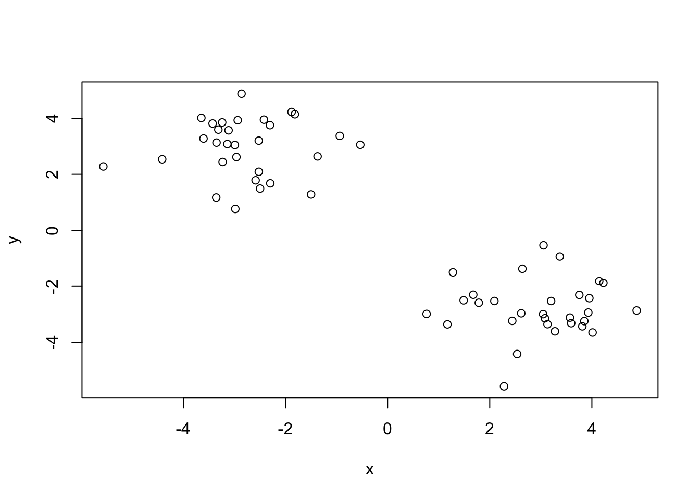
p <- 1:5
rev(p)[1] 5 4 3 2 1Now we can run kmeans() on this input z and see what the results look like.
km <- kmeans(z , center = 2)
km K-means clustering with 2 clusters of sizes 30, 30
Cluster means:
x y
1 -2.777706 2.955011
2 2.955011 -2.777706
Clustering vector:
[1] 1 1 1 1 1 1 1 1 1 1 1 1 1 1 1 1 1 1 1 1 1 1 1 1 1 1 1 1 1 1 2 2 2 2 2 2 2 2
[39] 2 2 2 2 2 2 2 2 2 2 2 2 2 2 2 2 2 2 2 2 2 2
Within cluster sum of squares by cluster:
[1] 59.62494 59.62494
(between_SS / total_SS = 89.2 %)
Available components:
[1] "cluster" "centers" "totss" "withinss" "tot.withinss"
[6] "betweenss" "size" "iter" "ifault" attributes(km)$names
[1] "cluster" "centers" "totss" "withinss" "tot.withinss"
[6] "betweenss" "size" "iter" "ifault"
$class
[1] "kmeans"Q. How manuy points are in each cluster?
km$size[1] 30 30Q. What “component of your result object details cluster assignment / membership?
km$cluster [1] 1 1 1 1 1 1 1 1 1 1 1 1 1 1 1 1 1 1 1 1 1 1 1 1 1 1 1 1 1 1 2 2 2 2 2 2 2 2
[39] 2 2 2 2 2 2 2 2 2 2 2 2 2 2 2 2 2 2 2 2 2 2Q. Plot x colored by the kmeans cluster assignment and add cluster centers as blue points.
km$centers x y
1 -2.777706 2.955011
2 2.955011 -2.777706Q. Plot
zcolored by the kmeans cluster assignment and add cluster centers as blue points.
plot(z, col = c("red", "blue") )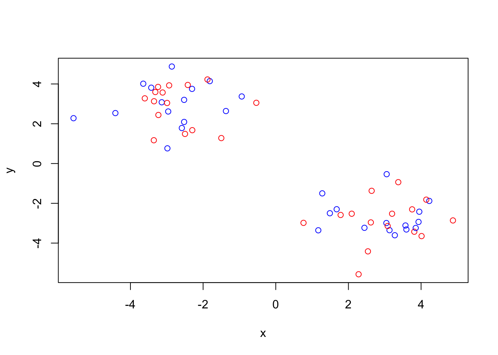
plot (z, col=c(1,2))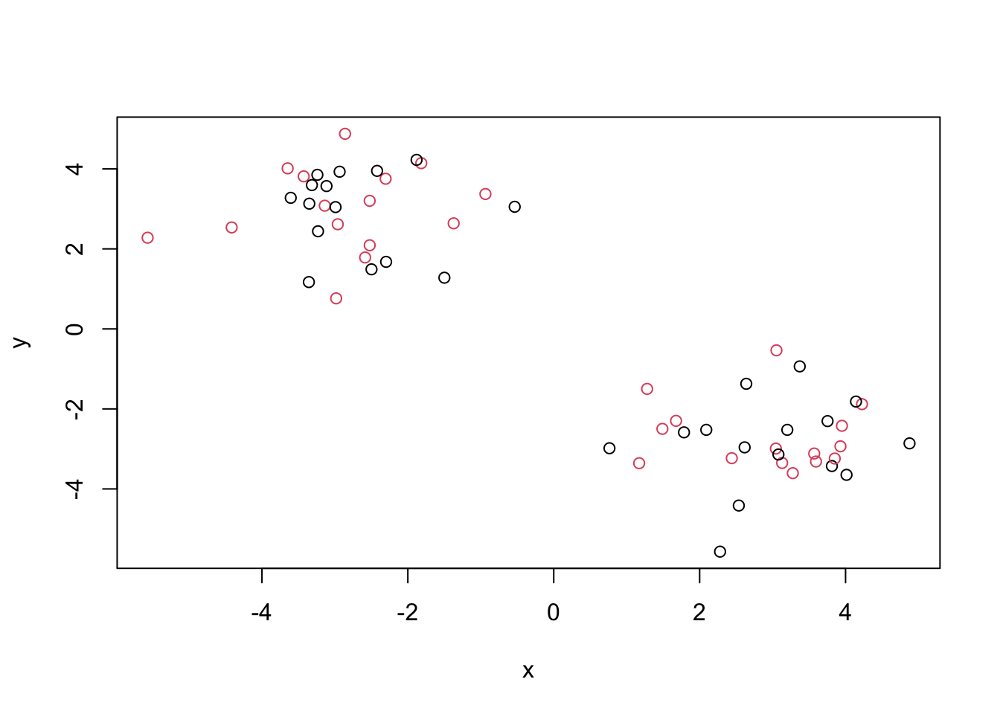
plot(z, col = c(km$cluster))
points(km$centers, col = "blue", pch = 15 )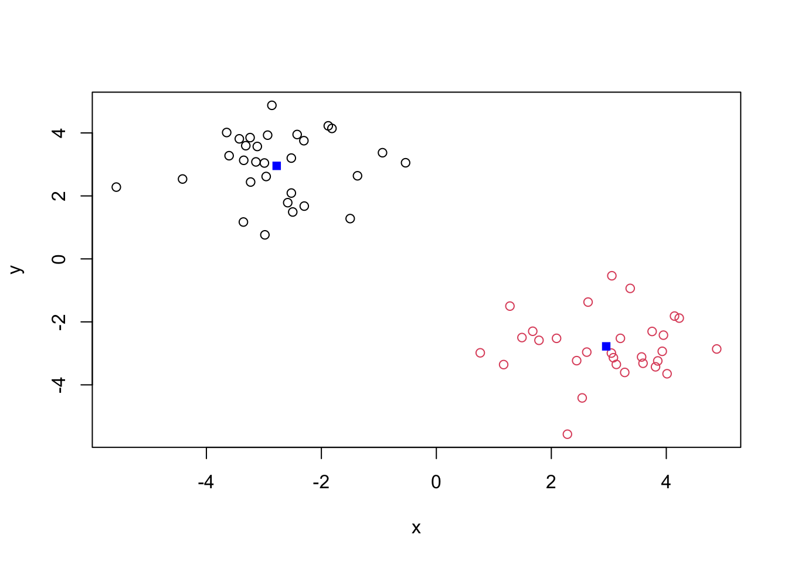
Today we will explore some core machine learning methods that are very popular in bioinformatics. These include clustering and dimensionallity reduction.
The main function in “base” R for K- mmeans clustering is called kmeans()
Before we go too deep let’s make up some “simple” data that we can cluster and know if we are getting a good answer or not. To do this we can use the rnorm() function:
hist(rnorm(1000, mean =3))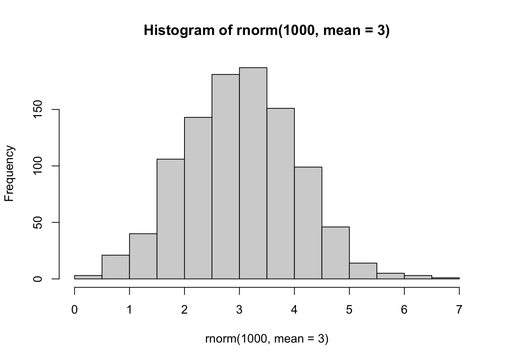
x <- c( rnorm(30, -3), rnorm(30, +3) )
x [1] -4.0213801 -4.6696548 -3.6548978 -2.2394163 -3.7503443 -4.0331398
[7] -1.6599619 -3.4158282 -3.8649044 -5.0294153 -3.0279193 -3.6286894
[13] -2.7712076 -3.9410375 -3.1943232 -4.2303361 -4.1325359 -2.5187176
[19] -4.0969747 -3.6185655 -3.3105737 -4.1586781 -3.0409013 -2.5390908
[25] -5.2281302 -3.6832373 -1.7299041 -1.1882778 -3.9480216 -4.5386771
[31] 2.6077739 3.2385487 3.0334353 3.1300167 3.4598699 4.4000097
[37] 0.7918882 3.4798139 3.2960470 2.9735209 1.7145516 2.8782489
[43] 1.8105010 2.2677166 5.3021235 3.0784678 0.9379702 3.0613472
[49] 3.1425807 3.1408977 3.2715791 3.6421366 2.1137838 3.0918948
[55] 2.1463893 1.1383802 3.5080431 3.3352142 1.6647781 3.2439898z <- cbind( x, y= rev(x))
z x y
[1,] -4.0213801 3.2439898
[2,] -4.6696548 1.6647781
[3,] -3.6548978 3.3352142
[4,] -2.2394163 3.5080431
[5,] -3.7503443 1.1383802
[6,] -4.0331398 2.1463893
[7,] -1.6599619 3.0918948
[8,] -3.4158282 2.1137838
[9,] -3.8649044 3.6421366
[10,] -5.0294153 3.2715791
[11,] -3.0279193 3.1408977
[12,] -3.6286894 3.1425807
[13,] -2.7712076 3.0613472
[14,] -3.9410375 0.9379702
[15,] -3.1943232 3.0784678
[16,] -4.2303361 5.3021235
[17,] -4.1325359 2.2677166
[18,] -2.5187176 1.8105010
[19,] -4.0969747 2.8782489
[20,] -3.6185655 1.7145516
[21,] -3.3105737 2.9735209
[22,] -4.1586781 3.2960470
[23,] -3.0409013 3.4798139
[24,] -2.5390908 0.7918882
[25,] -5.2281302 4.4000097
[26,] -3.6832373 3.4598699
[27,] -1.7299041 3.1300167
[28,] -1.1882778 3.0334353
[29,] -3.9480216 3.2385487
[30,] -4.5386771 2.6077739
[31,] 2.6077739 -4.5386771
[32,] 3.2385487 -3.9480216
[33,] 3.0334353 -1.1882778
[34,] 3.1300167 -1.7299041
[35,] 3.4598699 -3.6832373
[36,] 4.4000097 -5.2281302
[37,] 0.7918882 -2.5390908
[38,] 3.4798139 -3.0409013
[39,] 3.2960470 -4.1586781
[40,] 2.9735209 -3.3105737
[41,] 1.7145516 -3.6185655
[42,] 2.8782489 -4.0969747
[43,] 1.8105010 -2.5187176
[44,] 2.2677166 -4.1325359
[45,] 5.3021235 -4.2303361
[46,] 3.0784678 -3.1943232
[47,] 0.9379702 -3.9410375
[48,] 3.0613472 -2.7712076
[49,] 3.1425807 -3.6286894
[50,] 3.1408977 -3.0279193
[51,] 3.2715791 -5.0294153
[52,] 3.6421366 -3.8649044
[53,] 2.1137838 -3.4158282
[54,] 3.0918948 -1.6599619
[55,] 2.1463893 -4.0331398
[56,] 1.1383802 -3.7503443
[57,] 3.5080431 -2.2394163
[58,] 3.3352142 -3.6548978
[59,] 1.6647781 -4.6696548
[60,] 3.2439898 -4.0213801plot(z)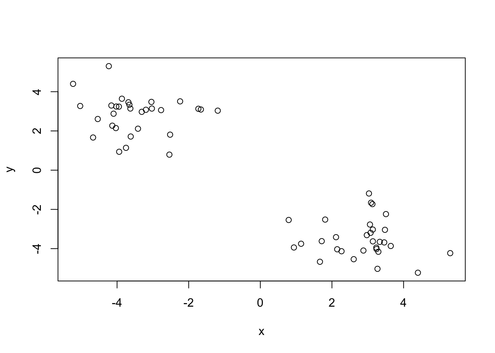
p <- 1:5
rev(p)[1] 5 4 3 2 1Now we can run kmeans() on this input z and see what the results look like.
km <- kmeans(z , center = 2)
km K-means clustering with 2 clusters of sizes 30, 30
Cluster means:
x y
1 2.830051 -3.495491
2 -3.495491 2.830051
Clustering vector:
[1] 2 2 2 2 2 2 2 2 2 2 2 2 2 2 2 2 2 2 2 2 2 2 2 2 2 2 2 2 2 2 1 1 1 1 1 1 1 1
[39] 1 1 1 1 1 1 1 1 1 1 1 1 1 1 1 1 1 1 1 1 1 1
Within cluster sum of squares by cluster:
[1] 54.80581 54.80581
(between_SS / total_SS = 91.6 %)
Available components:
[1] "cluster" "centers" "totss" "withinss" "tot.withinss"
[6] "betweenss" "size" "iter" "ifault" attributes(km)$names
[1] "cluster" "centers" "totss" "withinss" "tot.withinss"
[6] "betweenss" "size" "iter" "ifault"
$class
[1] "kmeans"Q. How manuy points are in each cluster?
km$size[1] 30 30Q. What “component of your result object details cluster assignment / membership?
km$cluster [1] 2 2 2 2 2 2 2 2 2 2 2 2 2 2 2 2 2 2 2 2 2 2 2 2 2 2 2 2 2 2 1 1 1 1 1 1 1 1
[39] 1 1 1 1 1 1 1 1 1 1 1 1 1 1 1 1 1 1 1 1 1 1Q. Plot x colored by the kmeans cluster assignment and add cluster centers as blue points.
km$centers x y
1 2.830051 -3.495491
2 -3.495491 2.830051Q. Plot
zcolored by the kmeans cluster assignment and add cluster centers as blue points.
plot(z, col = c("red", "blue") )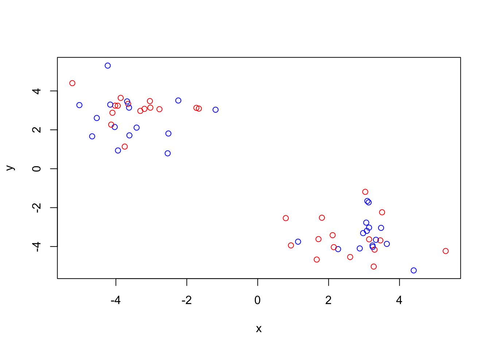
plot (z, col=c(1,2))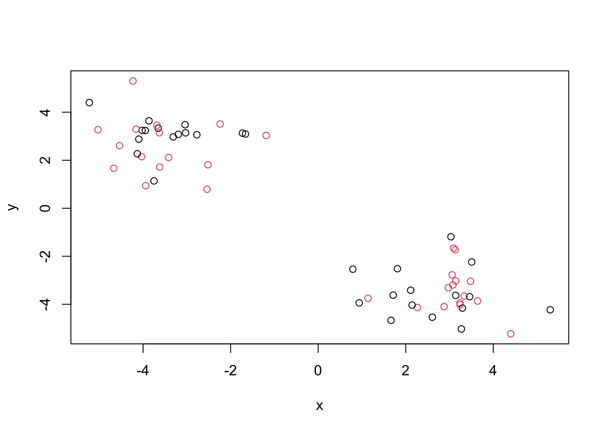
plot(z, col = c(km$cluster))
points(km$centers, col = "blue", pch = 15 )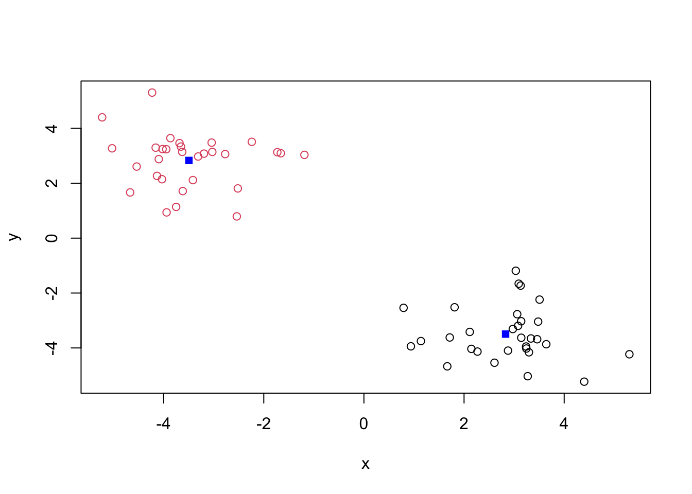
Q. Run a K-means clustering and plot the results asking for 4 clusters (K=4)?
km4 <- kmeans(z, centers = 4)
plot(z, col= km4$cluster)
points(km4$centers, col= "blue", pch=15)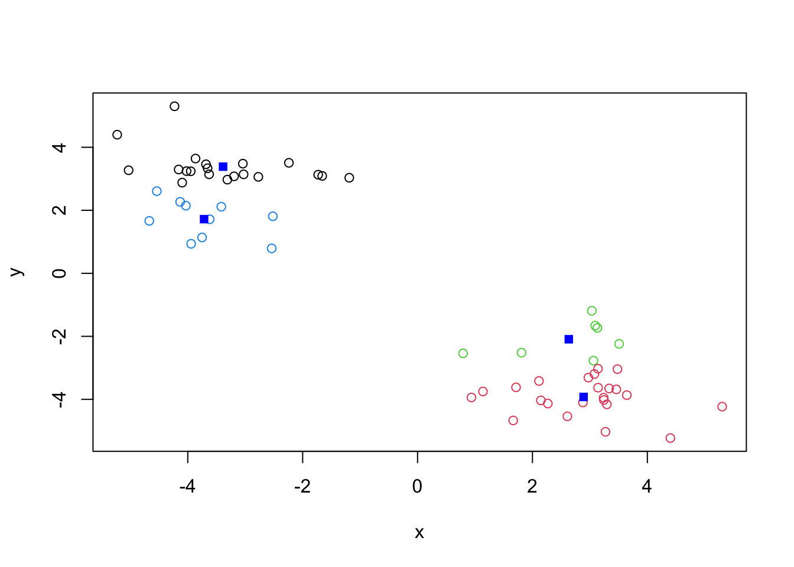
** N.B** You need to tell K-means the number of clusters (i.e. set
centers =2)!!
One approach is to try different values for centers and then pick the best…
km <- kmeans(z, centers = 5)
km$tot.withinss[1] 56.51207ans <- NULL
for (i in 1:10) {
km <- kmeans(z, centers = i)
ans <- c(ans, km$tot.withinss)
}
plot(ans, type = "o",
xlab="Number of clusters", ylab= "Total Sum of Squars Distance")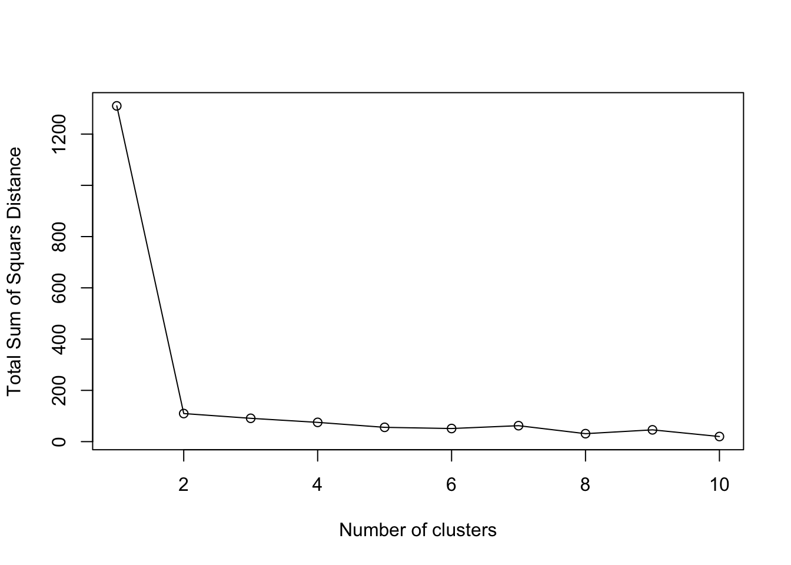
The main function is “base” R for Hierarchical Clustering is called hclust()
This function does not take your “raw” data for clustering. You must first build a “distance matrix” from your data and pass this as input to hclust()
d <- dist(z)
hc <- hclust(d)
hc
Call:
hclust(d = d)
Cluster method : complete
Distance : euclidean
Number of objects: 60 There is a bespoke plot() method for hclust() result objects.
plot(hc)
abline(h=8, col = "red")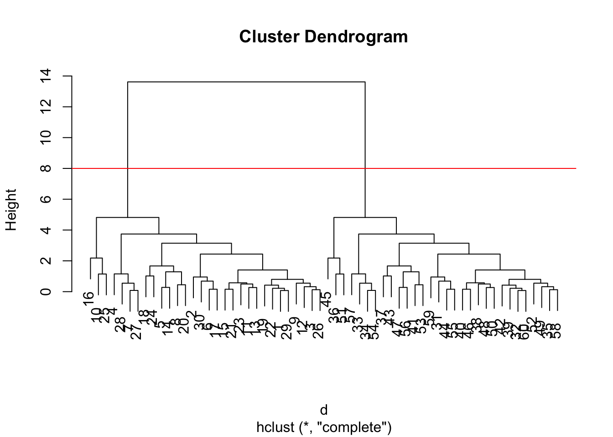
Once we have our hclust object (our “tree” of clusrer dendrogram”) we can “cut” the tree to reval the clustering pattern.
cutree(hc, h=8) [1] 1 1 1 1 1 1 1 1 1 1 1 1 1 1 1 1 1 1 1 1 1 1 1 1 1 1 1 1 1 1 2 2 2 2 2 2 2 2
[39] 2 2 2 2 2 2 2 2 2 2 2 2 2 2 2 2 2 2 2 2 2 2cutree(hc, k=4) [1] 1 1 1 1 1 1 1 1 1 2 1 1 1 1 1 2 1 1 1 1 1 1 1 1 2 1 1 1 1 1 3 3 3 3 3 4 3 3
[39] 3 3 3 3 3 3 4 3 3 3 3 3 4 3 3 3 3 3 3 3 3 3Q. Make a plot of
zwith your hclust results (i.e. colored by cluster membership)
grps <- cutree(hc, k=2)
plot(z, col=grps)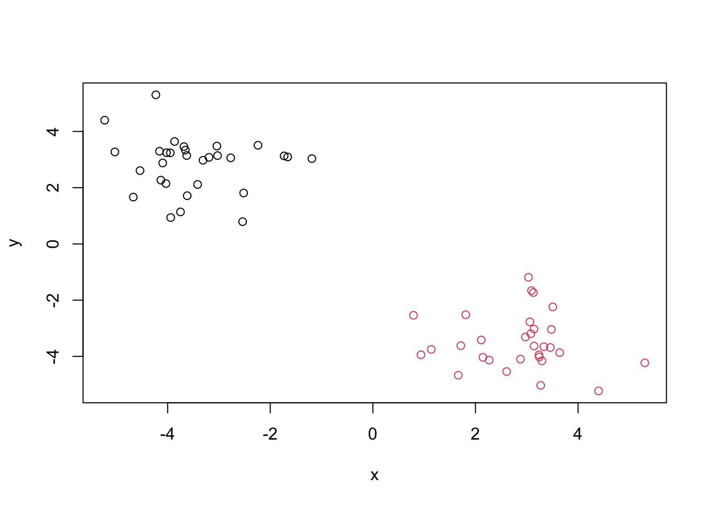
PCA is a dimensionallity reduction method that is popular for revealing patterns in complex dataset
Lets look at some data on the eating habits of folks from the UK to see if there are patterns and trends that have some regions being distinct from others.
The data is made avilable in CSV format, so we can see the (read.csv) function import to R:
url <- "https://tinyurl.com/UK-foods"
x <- read.csv(url)
rownames(x) <- x[,1]
x <- x[,-1]
head(x) England Wales Scotland N.Ireland
Cheese 105 103 103 66
Carcass_meat 245 227 242 267
Other_meat 685 803 750 586
Fish 147 160 122 93
Fats_and_oils 193 235 184 209
Sugars 156 175 147 139Q1. . How many rows and columns are in your new data frame named x? What R functions could you use to answer this questions?
___(x) ## [1] 17 5
dim(x)[1] 17 4head(x) England Wales Scotland N.Ireland
Cheese 105 103 103 66
Carcass_meat 245 227 242 267
Other_meat 685 803 750 586
Fish 147 160 122 93
Fats_and_oils 193 235 184 209
Sugars 156 175 147 139barplot(as.matrix(x), beside=T, col=rainbow(nrow(x)))
Q2. Which approach to solving the ‘row-names problem’ mentioned above do you prefer and why? Is one approach more robust than another under certain circumstances?
Using the second approach (read.csv(…, rownames =1) because it assigns the first column as row names during impor and avoids extra steps for later. Instead of having to do multiple steps, which is faster, simpler and reduces the risks of mistakes.
Q3. Changing what optional argument in the above barplot() function results in the following plot?
This can be done by changing to beside = FALSE
barplot(as.matrix(x), beside=FALSE, col=rainbow(nrow(x)))
library(tidyr)
# Convert data to long format for ggplot with `pivot_longer()`
x_long <- x |>
tibble::rownames_to_column("Food") |>
pivot_longer(cols = -Food,
names_to = "Country",
values_to = "Consumption")
dim(x_long)[1] 68 3library(ggplot2)
ggplot(x_long) +
aes(x = Country, y = Consumption, fill = Food) +
geom_col(position = "dodge") +
theme_bw()
Q4. Changing what optional argument in the above **ggplot() code results in a stacked barplot figure?
By changing dodge to stack instead.
library(ggplot2)
ggplot(x_long) +
aes(x = Country, y = Consumption, fill = Food) +
geom_col(position = "stack") +
theme_bw()
Make some plots to help make sense of obvius trends.
Q5.We can use the pairs() function to generate all pairwise plots for our countries. Can you make sense of the following code and resulting figure? What does it mean if a given point lies on the diagonal for a given plot?
By adding the pairs() function, it creates scatterplots comparing every pair of countries in the dataset. Each point represents one food category so the color helps distinguish different foods. This allows us to see food consumption patterns between countries. If a point lies on the diagonal for a given plot this means that the food category has the same consumption value in both countries being compared.
pairs(x, col=rainbow(nrow(x)), pch=16)
library(pheatmap)
pheatmap( as.matrix(x) )
x England Wales Scotland N.Ireland
Cheese 105 103 103 66
Carcass_meat 245 227 242 267
Other_meat 685 803 750 586
Fish 147 160 122 93
Fats_and_oils 193 235 184 209
Sugars 156 175 147 139
Fresh_potatoes 720 874 566 1033
Fresh_Veg 253 265 171 143
Other_Veg 488 570 418 355
Processed_potatoes 198 203 220 187
Processed_Veg 360 365 337 334
Fresh_fruit 1102 1137 957 674
Cereals 1472 1582 1462 1494
Beverages 57 73 53 47
Soft_drinks 1374 1256 1572 1506
Alcoholic_drinks 375 475 458 135
Confectionery 54 64 62 41Q6. Based on the pairs and heatmap figures, which countries cluster together and what does this suggest about their food consumption patterns? Can you easily tell what the main differences between N. Ireland and the other countries of the UK in terms of this data-set?
England, Wales, and Scotland cluster more closely together so this tell us they have more similar food consumption patterns. N. Ireland appears more separated from the other countries, meaning its diet differs more from the rest of the UK in the dataset. The main differences for N. Ireland seem to be higher consumption of some foods such as carcass meat and lower consumption of others liek fresh vegetables and fresh fruit.
Key-point: Even relatively small datasets can prove challenging to interpret.
The main function in “base” R for pca is called prcamp(). TRhis function wants the “obsevations” to be rows and the “variables” to be columns. So here we need to take the transpose of our x input object.
pca <- prcomp( t(x) )
summary(pca)Importance of components:
PC1 PC2 PC3 PC4
Standard deviation 324.1502 212.7478 73.87622 2.921e-14
Proportion of Variance 0.6744 0.2905 0.03503 0.000e+00
Cumulative Proportion 0.6744 0.9650 1.00000 1.000e+00The returned pca object has compponent that we can use to make our main result figures:
attributes("pca")NULLThe main result figure from this analysis is called a “PC plot” or “ordentation plot plot on pC1 vs PC2 plot”).
This plot shows how samples (in this case countries) relate to each other along our new PC axis.
This is our new “reduced-dimensional space”. In this case 2 dimensions, PC1 and PC2, that capture most of the variance in the original 17 dimensional data - set.
Q7. Complete the code below to generate a plot of PC1 vs PC2. The second line adds text labels over the data points.
ggplot(pca$x) +
aes(x = PC1, y = PC2, label = rownames(pca$x)) +
geom_point(size = 3) +
geom_text(vjust = -0.5) +
xlim(-270, 500) +
xlab("PC1") +
ylab("PC2") +
theme_bw()
Q8. Q8. Customize your plot so that the colors of the country names match the colors in our UK and Ireland map and table at start of this document.
library(ggplot2)
mycols <- c("red", "blue", "green", "orange")
ggplot(pca$x, aes(PC1, PC2, label = rownames(pca$x))) +
geom_point(color = mycols) +
geom_text(size = 3, vjust = 2, color = mycols)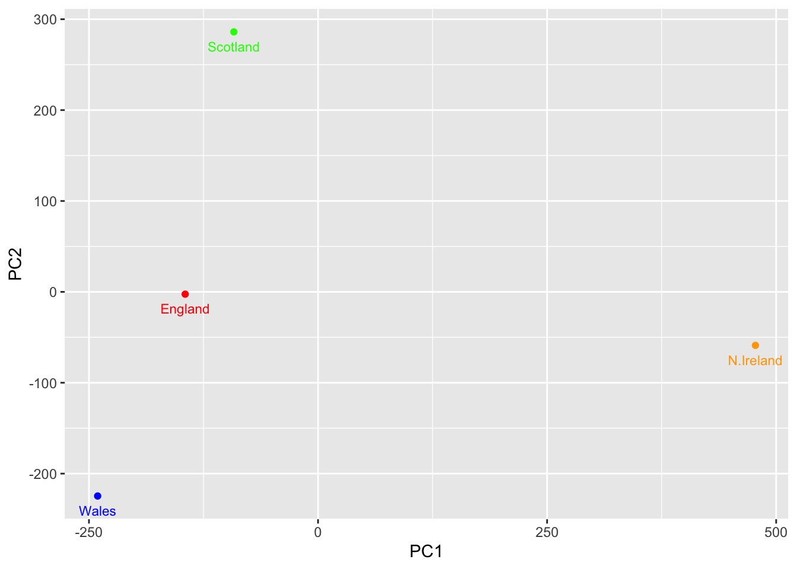
ggplot(pca$rotation) + aes(PC1, row.names(pca$rotation)) + geom_col()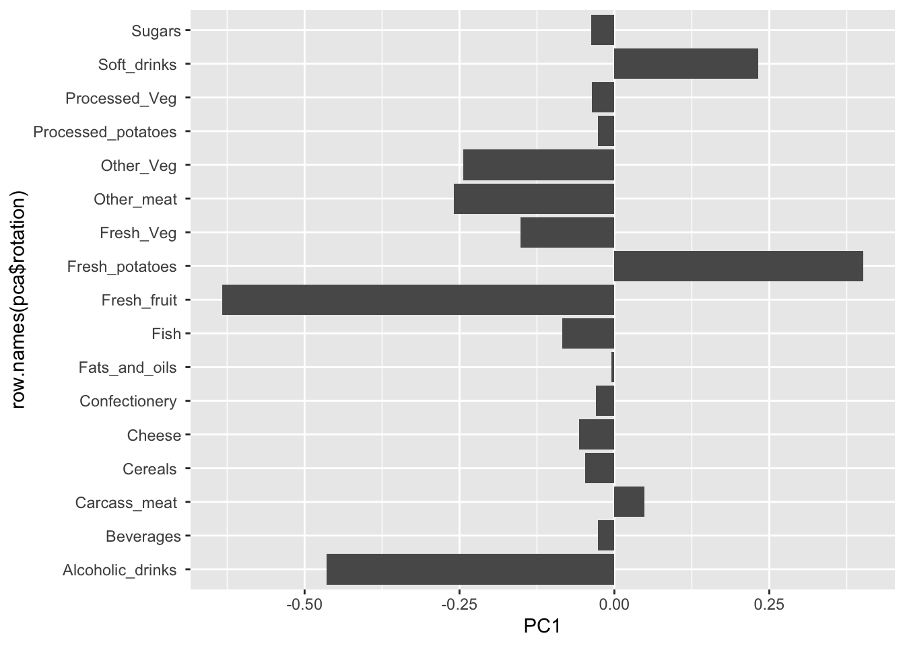
ggplot(pca$rotation) +
aes(x = PC1,
y = reorder(rownames(pca$rotation), PC1)) +
geom_col(fill = "steelblue") +
xlab("PC1 Loading Score") +
ylab("") +
theme_bw() +
theme(axis.text.y = element_text(size = 9))
Q9: Generate a similar ‘loadings plot’ for PC2. What two food groups feature prominantely and what does PC2 maninly tell us about?
ggplot(pca$rotation) +
aes(x = PC2,
y = reorder(rownames(pca$rotation), PC2)) +
geom_col(fill = "steelblue") +
xlab("PC2 Loading Score") +
ylab("") +
theme_bw() +
theme(axis.text.y = element_text(size = 9))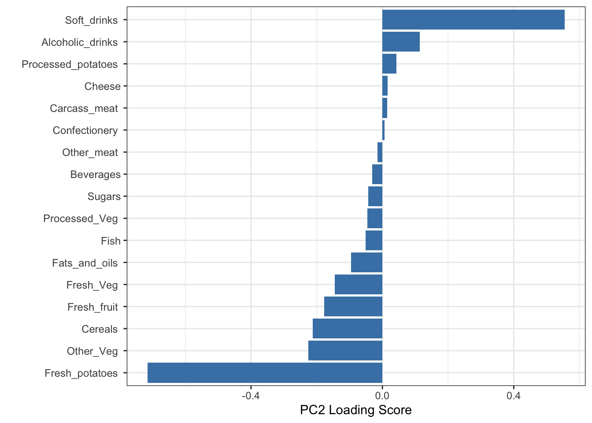